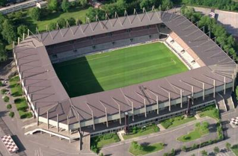

Treinador: Gary O'Neil
Gary O'Neil é um treinador de futebol inglês e ex-jogador, atualmente o treinador principal do Strasbourg, clube da Ligue 1 francesa. Assumiu o cargo em 7 de janeiro de 2026.

Estádio: Stade de la Meinau
A história do Stade de la Meinau é marcada por uma resiliência que espelha a própria história da Alsácia, tendo passado por períodos de guerra, mudanças de soberania e reinvenções arquitetónicas.

Estilo de Jogo:
O estilo de jogo de Gary O'Neil no estrasburgo ainda está a ser implementado, mas as indicações iniciais e a filosofia demonstrada em clubes anteriores sugerem uma abordagem focada em adaptabilidade tática e organização defensiva.
"Jamais seul!"